<!-- section 4 - lsf logo -->
<section class="bg-gradient-to-r from-[#0066b3] to-[#0059a3] text-white">
  <div class="max-w-screen-xl mx-auto px-4">
    <div class="flex flex-col md:flex-row items-center py-10 gap-6">

      <!-- Left Text Content -->
      <div class="md:w-1/2 space-y-4">
        <h2 class="font-bold text-[1.75rem]">Drive Open Innovation</h2>
        <p class="text-[1.05rem] mb-0">
          Develop your skills, collaborate with other innovators on worthwhile open-source projects, and use technology to advance society by joining the LSF Fellows community, a global network of innovators.
        </p>
        <a href="#" class="inline-block mt-3 bg-white text-[#0059a3] hover:bg-gray-100 px-5 py-2 font-medium rounded shadow"> Apply </a>
      </div>

      <!-- Right Image -->
      <div class="md:w-1/2 flex justify-end">
        
      </div>

    </div>
  </div>
</section>